| ／湯物 | ||||
|
|
▍蒜味蜆湯 ▍ 主廚嚴選花蓮蜆，搭配日式昆布柴魚高湯及蒜頭長時間熬煮，湯頭濃郁飽滿，口感清甜! |
|||
| ／先付 | ||||
|
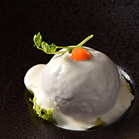 ▍燻鮭魚番茄沙拉 ▍ 以燻鮭魚佐新鮮番茄，淋上主廚 特調白玉優格醬，酸甜不膩，展 現獨特日式風味。 |
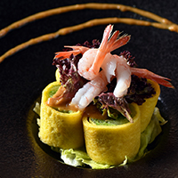 ▍甜蝦時蔬捲 ▍ 日式蛋皮包裹季節時蔬佐小甜蝦， 搭配主廚特調胡麻醬，口感清爽， 層次豐富。 |
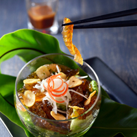 ▍魚皮野蔬沙拉 ▍ 魚皮搭配季節時蔬， 以清爽和風醋汁調味。 口感滑溜彈Q的前菜料理~ |
||
| ／刺身 烤物 | ||||
|
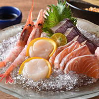 ▍刺身盛合 ▍ 特選季節新鮮海味，四種當令生鮮魚片盛合，緊實鮮甜的肉質，品嚐海洋最純粹的甘美味。 (依人數以拼盤方式呈現，此為2人份示意圖) |
 ▍鮮魚一夜干 ▍ 以一夜干手法原味火烤時旬鮮魚， 溫熱石隔著竹葉，暖著細緻魚肉， 風味鮮香、飽滿鮮嫩。 |
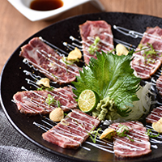 ▍生牛肉刺身 ▍ 薄切無骨牛小排，外熟內生的炙燒口感， 搭配上橙醋醬汁，散發肉質自然鮮甜！ |
||
| ／強肴 | ||||
|
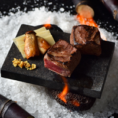 ▍蔗香石燒牛小排 ▍ 美國黑安格斯無骨牛，高溫火山岩炙烤，散發甘蔗香氣，口感鮮嫩。 強肴升級+180元、單點330元 |
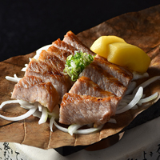 ▍伊比利豚朴葉燒 ▍ 西班牙伊比利松阪豚佐蜜蘋果，彈 牙多汁的口感，令人齒頰留香。 強肴升級+150元、單點300元 |
|||
|
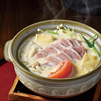 ▍地雞豆乳鍋 ▍ 以豆漿為湯底，搭配特級台灣土雞肉、新鮮時蔬，湯頭濃郁飽滿，口感清甜 暖味! |
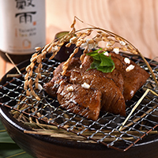 ▍稻香石燒豚 ▍ 上等豚排以獨門日式醬汁烘烤，充滿稻穗 香氣，搭配栗子地瓜，展現豐饒之味。 |
 ▍時旬鮮魚蒸 ▍ 以清蒸方式烹調台灣在地現撈海魚， 選用當季新鮮的魚種搭配蠔油醬汁， 肉質細緻鮮甜！(每日現流限量供應) |
||
|
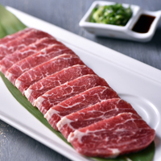 ▍岩烤石板牛 ▍ 牛肉於300°C岩板微炙5分熟、 肉汁瞬間封存，佐以海鹽或主廚特製醬汁，口感鮮嫩多汁。 |
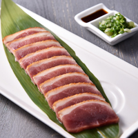 ▍岩燒櫻桃合鴨 ▍ 選用宜蘭櫻桃鴨胸肉以高溫岩板炙燒、 鎖住8分熟的鮮嫩，佐以玫瑰岩鹽或 主廚特製醬汁，鮮美滋味豐饒嘴邊。 |
 ▍牛肉箬竹燒 ▍ 選用紐澳板腱牛肉，以特調滷汁浸泡後， 先煎後烤至七分熟，搭配山賊醬， 口感微辣軟嫩。 |
||
|
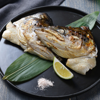 ▍鹽烤鮭魚頭 ▍ 主廚特選鮭魚頭，搭配岩鹽烘烤而成， 香氣十足，肉質溫潤鮮彈。 |
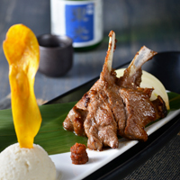 ▍醬燒羊排 ▍ 選用紐西蘭帶骨羊肩排，以煙燻炭火醬烘烤，並搭配主廚特調蒜味辣醬及洋芋泥， 口感鮮嫩風味獨特。 |
|||
| ／釜飯 | ||||
|
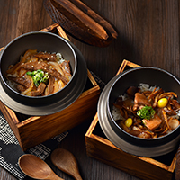 |
▍雞肉蕈菇釜飯 / 日式牛肉釜飯 ▍ 特選在地好米「馥米」，以主廚特製高湯蒸煮而成，米飯口感Q彈， 是一道暖心及風味深遠的日式佳餚。 |
|||
| ／甘果物 | ||||
|
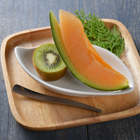 |
▍時令鮮果 / 鳳梨奶酪 ▍ 特選當季當地的新鮮水果，或是主廚新鮮手作鳳梨奶酪 |
|||
| ／飲料 | ||||
| 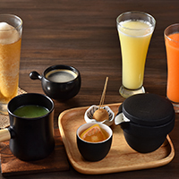 |
▍飲料 ▍ 熱柚子綠茶 / 青梅冰沙 / 鳳梨苦瓜汁 / 胡蘿蔔鮮果汁 / 熱黑豆抹茶 / 熱咖啡 |
|||
／宇治抹茶祭 (甘果物X飲料升級+70元、單點160元)
|
||||
| 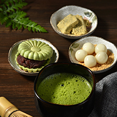 ▍抹茶白玉甜點組合 ▍ 主廚現刷宇治抹茶，搭配白玉、蕨餅、紅豆最中餅三款經典日式甜點，品嚐來自京都的幸福滋味。 |
 ▍抹茶冰淇淋熱蛋糕 ▍ 香濃抹茶醬淋在抹茶冰淇淋與磅蛋糕上，在鐵板上滋滋作響，視覺、嗅覺、味覺都是一大享受！ | 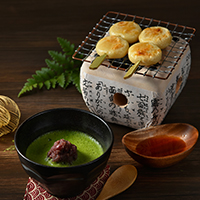 ▍烤糰子佐紅豆抹茶 ▍ 傳統日本烤糰子，刷上主廚特製甜醬油，搭配紅豆抹茶湯，正適合冬天享用！ |
||
| ※ 本餐廳得依季節更替調整菜單內容。如遇菜色內容調整，仍可於同等值商品中選擇。 | ||||